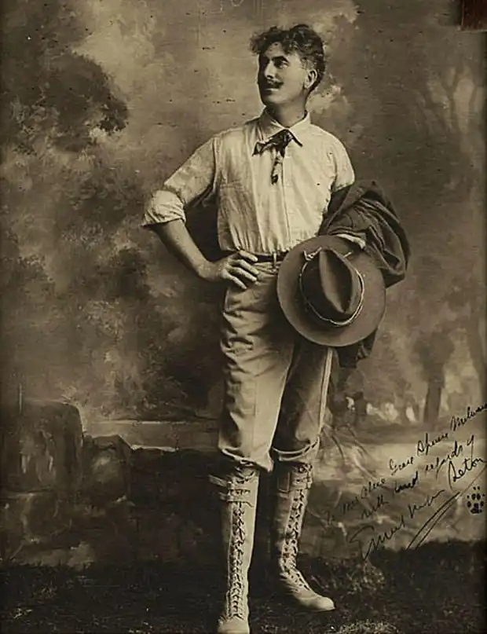
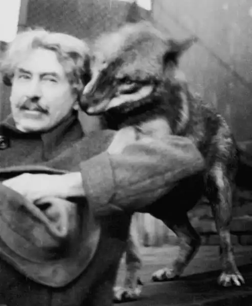
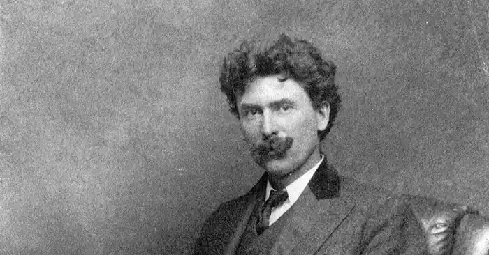

EPHECT СЕТОН-ТОМПСОН
(1860-1946)
Ернест Сетон-Томпсон народився (1860-1946) в Англії, в невеликому містечку Саус-Шільдсе. Але він не був англійцем за походженням. Його предки були вихідцями із Шотландії. Перекази про славне минуле любовно зберігалися в сім'ї, як і про мисливські успіхи багатьох їх членів, які належали до старовинного роду, особливо про лорда Сетона, пристрасного мисливця, який убив у тому ж XVIII столітті останнього вовка на Британських островах. Багато років по тому, ставши відомим письменником, Сетон-Томпсон відновив старовинне прізвище роду, зберігши на якийсь час подвійне прізвище, під яким він і утвердився як письменник у світовій літературі. Як людина різнобічно обдарована, він розповів про своє життя в написаній ним на схилі років книжці "Стежка художника-натураліста" (1941), в російському перекладі "Моє життя". Батько майбутнього письменника був людиною заможною, власником близько десяти суден, які перевозили товар в усі кінці світу. Численна родина — в ній було чотирнадцять дітей (четверо з них померло в ранньому віці) — жила в достатку. Сетон-Томпсон був наймолодшим, десятою дитиною. Уже в ранньому віці він пройнявся любов'ю до тварин. Хоч би як гірко він плакав, варто було лише йому сказати: "Дивись, пташка!" або показати якусь комашку, щоб він замовк. Взимку, як він згадував, мати, бувало, закутуючи його в ковдру, говорила, щоб він уявив себе деревцем. Увійшовши в цей образ, хлопчик, не ворухнувшись, годинами просиджував десь коло стіни. Також любив слухати казки, такі, як "Червона Шапочка" і "Вовк та семеро козенят", але його симпатії були завжди на боці вовка. Правдиво описує письменник епізод кривавої розправи, в якій він і сам брав участь, над сусідськими курми, які заблукали на їх ділянку. Пізніше з'явився і страх і сором за те, що вчинив. Мабуть, саме після цієї події письменник почав замислюватися про тяжкі й нерідко драматичні взаємовідносини між людиною і природою, про необхідність захищати її від людських бажань, які шкодять природі. У перші роки дитинства Сетона-Томпсона справи батька погіршилися, і, коли хлопчику виповнилося шість років, уся родина переїхала в пошуках щастя до Канади. Спочатку вони улаштувалися в місті Ліндсей, у провінції Онтаріо, а чотири роки по тому переїхали до Торонто, тоді невеличке містечко, оточене лісами. Цей переїзд до Канади визначив подальшу долю письменника. Хлопчик опинився в зовсім незвичних для нього умовах. Йому відкрився новий світ лісів, де було багато різноманітних тварин та птахів. Юному Ернесту найбільше запам'яталося, як руками батьків та братів був зведений їх перший дім, у будівництві якого і він, малюк, теж брав участь. Також він запам'ятав далеку дорогу до школи, коли він якось майже не замерз. Запам'ятав, як на його очах брати підстрелили першого оленя, і свої почуття: бажання вцілити в нього, а потім почуття болю при вигляді тварини, яка загинула на очах. Весь свій вільний час хлопець завжди проводив у полях, лісах, спостерігаючи за життям тварин та пташок. Уже до закінчення школи він знав, що стане натуралістом. Але батько був проти, бо ця професія не давала змоги заробити багато грошей. Він вважав, що краще вчитися на художника, малюючи своїх улюблених тварин. Тому він почав малювати. Навчав його місцевий майстер. Юнак вступає до місцевої художньої школи, де отримує золоту медаль. У 1879 році Ернест їде до Лондона вступати в Королівську Академію Мистецтв. Але тільки наступного року він був зарахований і дістав можливість пройти семирічний курс навчання. Найбільшою втіхою для нього тоді було відвідування зоопарку, де він просиджував цілими днями, роблячи ескізи тварин. Але провчився він в академії недовго. Постійна потреба в грошах, голодування надірвали його сили, і він змушений був повернутися додому в 1882 році. Сетон-Томпсон оселився в Манітобі й повернувся до своєї улюбленої справи — спостереження за тваринами. У цей час він пише й публікує багато статей про тварин, а в 1886 році виходить його перша книга "Ссавці Манітоби", після якої невдовзі й з'явилася низка видань наукового характеру. У 1898 році Сетон-Томпсон видав книжку "Тварини, яких я знав" (у російському перекладі "Мої дикі друзі"), яка змусила заговорити про нього як про письменника, котрий знову відкрив для людини світ тварин. Услід за нею з'явилися такі книжки, як: "Доля гнаних" (1901), "Тварини-герої" (1905), "Дикі тварини у себе вдома", що лише зміцнили про нього це враження. Головні герої Сетона-Томпсона — не лише однієї, двох, а кількох десятків книжок — тварини. Іноді свійські, але здебільшого дикі, лісові, яких сучасним людям, як правило, доводилося бачити лише в зоопарку, в маленькій і незручній клітці. Сетон-Томпсон описує їхнє життя на волі, де вони з'являються в усій своїй красі, ні в чому не поступаючись людині, а переважно перевершуючи її, зі своїм особливим характером, звичками, зі своїм неповторним характером, з єдиною у своєму роді долею, примхливі повороти якої захоплюють не менш ніж інтриги пригодницького роману. В історіях, які розповідає письменник, є багато незвичайного. Його герої — вінніпезький вовк, пес Бінго, який врятував господаря від вірної загибелі; мудрий вожак зграї вовків Лобо, котрий легко розгадує всі хитрощі мисливців, і його подруга Бланка; койот Тіто; кролик Джек і багато інших — обдаровані ніби надзвичайними якостями, проте самі розповіді вражають передусім своєю реалістичністю. Це "невигадані історії". Письменник говорить лише про те, що бачив, у чому сам брав участь. Але й бачення, і його участь — особливі. Навколишній світ він бачив очима натураліста не просто залюбленого в природу, не розчуленої, а людини, яка ретельно вивчає її в усіх проявах, яка намагається збагнути її таємниці, підходить до неї з науковою об'єктивністю. Сетон-Томпсон ретельно вивчив звички найрізноманітніших тварин та птахів. Коли він писав про тварин, читачі були вражені спостережливістю автора. Про все Томпсон писав так, неначе сам був колись вороном, чи лисом, чи ведмедем. У деталях знав побут тварин, знав, як вони виводять своє потомство, як знаходять їжу, і до яких хитрощів удаються, щоб обдурити своїх ворогів. І це невипадково, адже він був ученим і десятки років провів, спостерігаючи за багатьма тваринами канадських лісів. Все побачене він заносив до свого щоденника натураліста, яким користувався, коли починав писати свої твори, де "олюднював" своїх тварин. До того ж письменник чудово малював. Як правило, він сам ілюстрував свої книжки й залишив тисячі малюночків з натури. Але тварини були не єдиним захопленням Сетона-Томпсона. Іншою його пристрастю були індіанці, їх побут, їхня "лісова наука" Письменник глибоко захоплювався тим, як індіанці, чиє життя минало в лісах, серед дикої природи, вміли читати її, мов відкриту книжку, проникаючи в усі її таємниці Вивченню їхнього життя він присвятив багато років. Це все знайшло відображення в книжках Сетона-Томпсона, які були не менш відомими, ніж його розповіді про тварин. Серед цих книжок були: "Берестяний сувій індіанців" (1907), "Книга лісової науки й індіанських премудрощів" (1912), "Підручник лісовика" (1912), "Євангеліє червоношкірого" (1938). До книжок про індіанців відносять також і книжку "Рольф у лісах" (1911). "Лобо" Головним героєм цього оповідання є величезний вожак зграї сірих вовків — Лобо, який спустошував долину Куррумпо протягом багатьох років. Його гучне ревіння, добре відоме всім пастухам, лякало весь населений край північної частини Нової Мексики. Добре відома була також його малочисельна зграя, в якій була й вовчиця Бланка, подруга Лобо, котра здійснювала набіги на стада корів і отари овець не тільки заради споживи, а й задля розваги, з'їдаючи при цьому лише відбірні шматки м'яса молодих телиць. Завдяки своєму вожакові ці вовки були невловимі: вони ніколи не потрапляли в пастки, не їли м'яса дохлятини й мовби глузували над усіма хитрощами, що їх намагалися застосувати скотарі та мисливці. У оповідача цієї історії, колишнього мисливця на вовків, вожак викликав почуття поваги за свій гострий розум, спритність і винахідливість. Але герой прибув на ранчо з метою допомогти фермерам у боротьбі з цією лютою зграєю. Багато невдач спіткало його, перш ніж він зрозумів, на який гачок можна підчепити верховода. Під час цих пошуків ми разом з автором маємо змогу завдяки його натуралістичним описам уявити собі скелясті гори, де ховалися вовки, фермерські садиби, картини розправ над вівцями тощо. Оповідач добре вивчив вдачу вожака і, як кмітливий мисливець, зрозумів його слабке місце (як одинак він був нездоланним і міг загинути лише через необережність товариша, якому довіряв). Блискучий план спрацював відмінно, приманкою послужила Бланка, і Лобо, шукаючи її, таки потрапив у пастку. Але загибель цього гігантського вовка — справжня трагедія. Зрада друзів, презирство до тих, хто переміг, туга за загиблою коханою і, нарешті, гідна смерть викликають непідробний жаль до цього хижого звіра. ОСНОВНІ ТВОРИ: "Тропа художника-натураліста", "Моє життя", "Мої дикі друзі", "Доля гнаних", "Тварини-герої", "Дикі тварини у себе вдома", "Берестяний свиток індійців", "Книга лісної науки і індійських премудрощів", "Підручник лісовика", "Євангеліє червоношкірого", "Рольф у лесах". ЛІТЕРАТУРА: 1 Рассказы о животных. — М.,1966; 2. Моя жизнь. Животные-герои. Судьба гонимых. Мои дикие друзья — М.,1982.